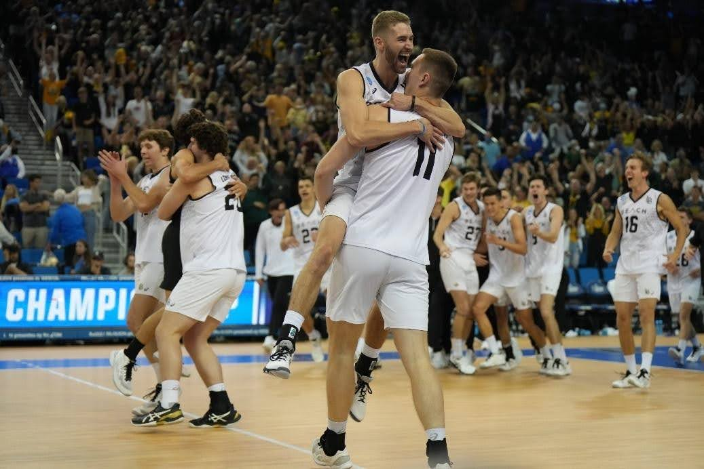
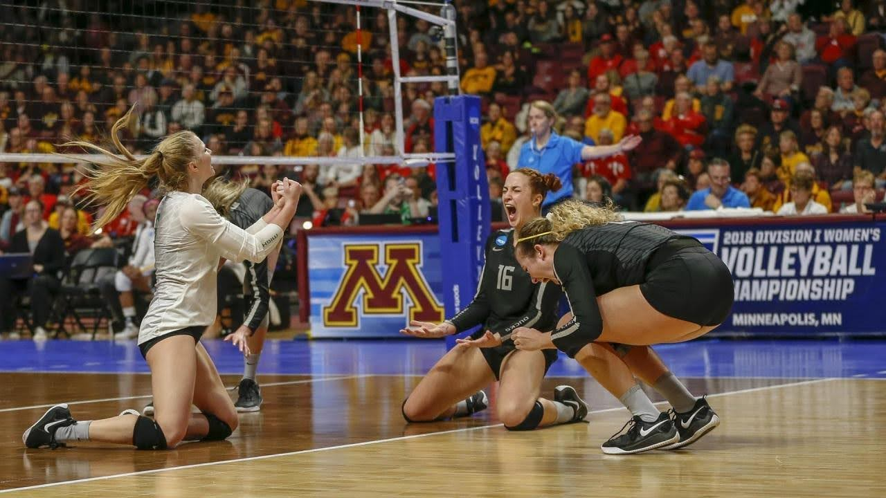
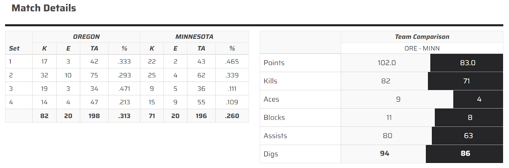
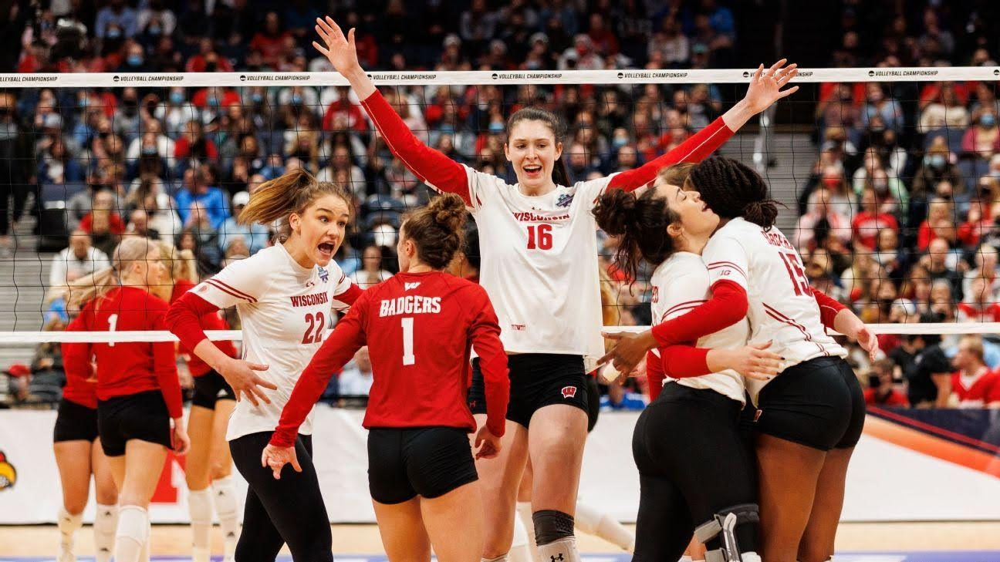
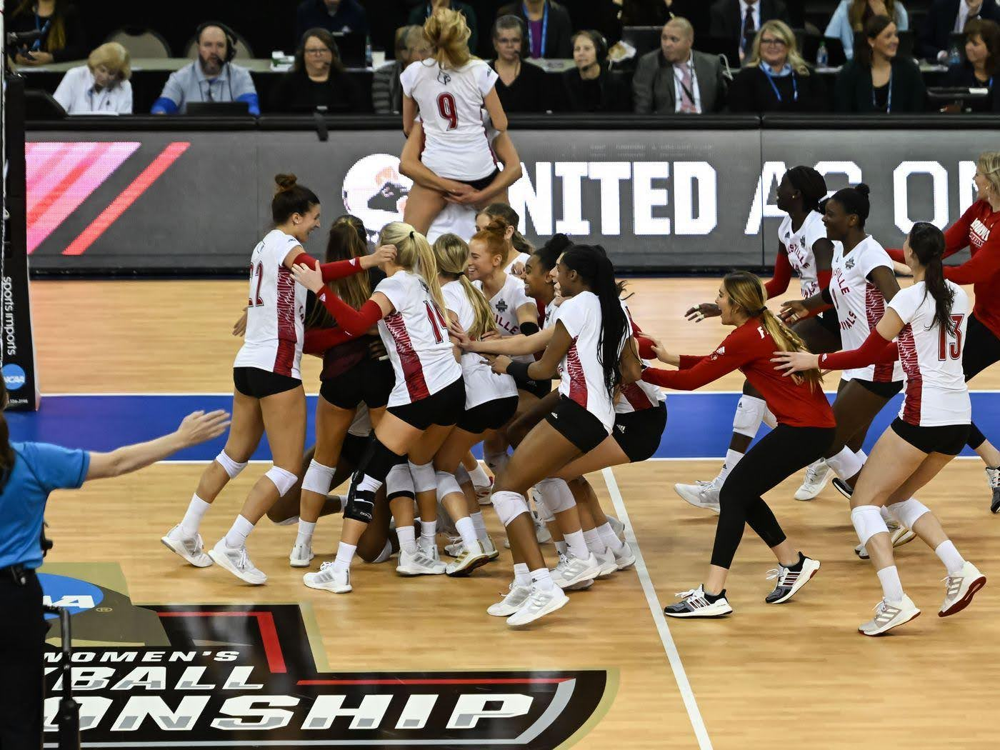
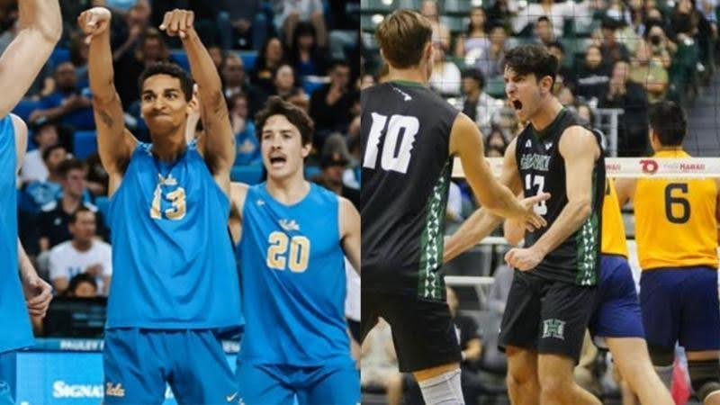
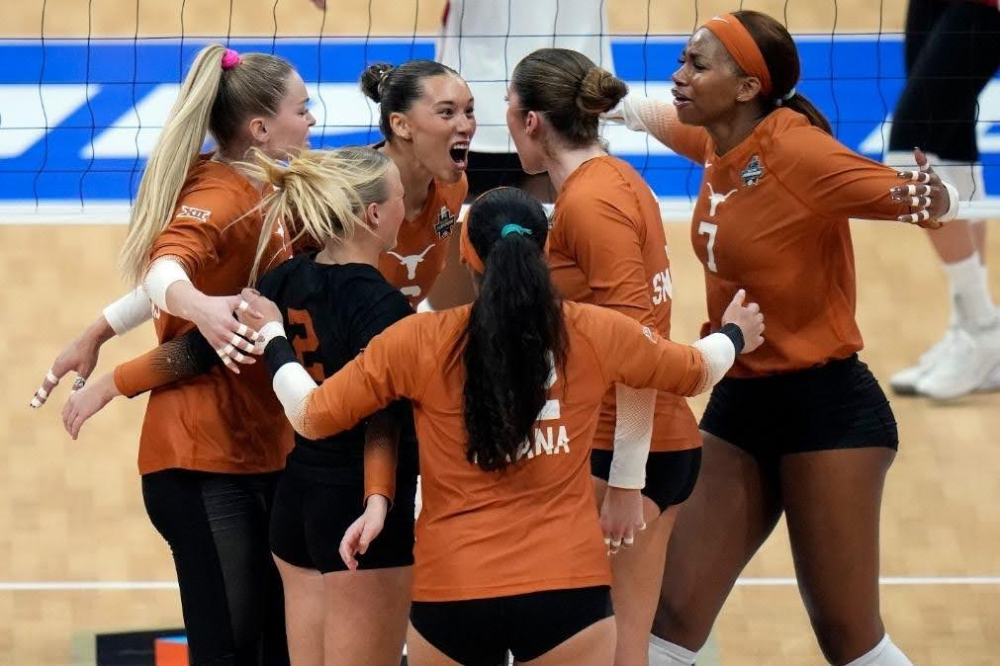
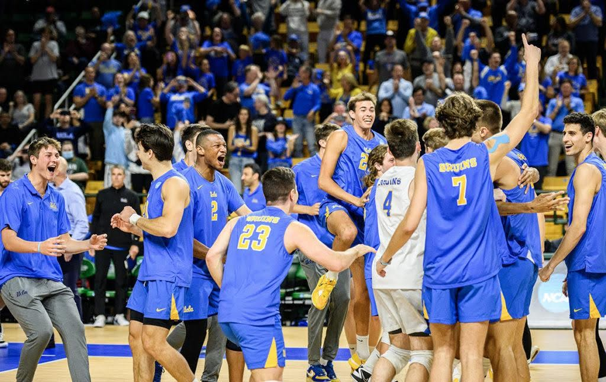
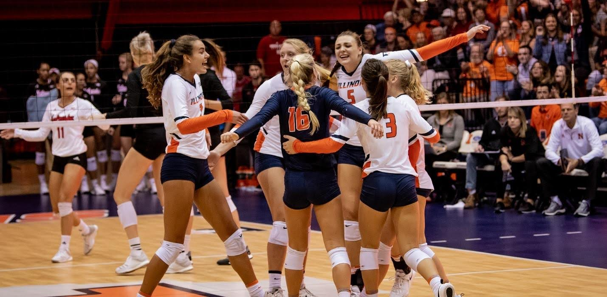

NCAA 2013 – 2023 Wrapped: The Best and Worst Games of the Past Decade
By Grace Qian | May 15, 2024

Before I started playing volleyball, I first watched it. And I’ve watched A LOT of volleyball games – some had me on the edge with each point while others simply made me fall asleep. Delving into the highs and lows of NCAA collegiate volleyball for both men and women, I will spotlight standout performances and unforgettable moments that have defined the sport in recent years. From nail-biting regional clashes to epic national championships, the court has been graced by powerhouse teams showcasing their skills and determination. There have also been instances where even the most formidable teams faced unexpected challenges, resulting in disappointing outcomes (cough cough - Nebraska in 2023 - cough cough). Here’s my hot take on the best and worst NCAA volleyball games of the past decade (ten in total), reliving the intense rivalries, incredible comebacks, and, at times, the bitter taste of defeat.
The Best Games from 2013-2023 — Ranked
1. San Diego vs Stanford (2022 NCAA Women’s Volleyball Regional Finals)
Link: https://www.youtube.com/watch?v=ZQ_ltvEXEXs&t=3993s
The San Diego Toreros and Stanford Cardinal battled it out in 5 sets – and San Diego came out on top.
Traditionally speaking, Stanford has always been a powerhouse for sports, especially women’s volleyball. In fact, Stanford has won nine NCAA volleyball national championships, the most of any program, and 24 regular season conference titles. To add on to this impressive resume, the Cardinal has produced multiple All-Americans in the same season in 17 of the past 18 seasons. Stanford made its 41st NCAA Tournament appearance in 2022, reaching its 16th regional final since the tournament expanded to 64 teams in 1998. The Cardinal finished the 2022 regular season 27-5 overall and won its 23rd conference championship with a 19-1 record in the Pac-12.
The 2022 Stanford starters consisted of stacked team of All-Americans and elite players with junior opposite hitter and Pac-12 Player of the Year Kendall Kipp, defensive leader in libero (2023 Pac-12 Defensive Player of the Year) Elena Oglivie, outside hitters Elia Rubin and Catie Baird, middle blocker Sami Francis, and 2022 Pac-12 Setter of the Year Kami Miner.
On the other hand, University of San Diego’s Women’s Volleyball team had never won a NCAA national championship, let alone ever made the NCAA National Semifinals. However, in the 2022 season the team was exceptionally strong with the team winning the West Coast Conference (WCC) undefeated.
The 2022 Toreros boasted an impressive line-up as well, consisting of Penn State transfer and graduate student setter Gabby Blossom, defensive leaders in libero Annie Benbow and defensive specialist Madi Allen, opposite Grace Frohling, outside hitters Katie Lukes (2022 WCC Player of the Year) and Breana Edwards, and middle blockers Leyla Blackwell and Haylee Stoner.
While these players might not boast national titles, they have some of the best chemistry. And the team works together to heighten each other’s strengths – which include fast offense and a large physical team with 6 feet plus middles and outsides who added huge blocks.
But what I personally really liked about this team was their tenacious attitude towards the game and towards each other. Head coach Jennifer Petrie and her team had a motto “Why not us?” Often you will see the bench players of a team just sit on the sideline and cheer nonchalantly, but with this team, everyone was involved on and off the court and I love that.
I chose this game as my all-time favorite to watch because of the way both teams fought. Stanford was good all-around, with Miner setting Kipp to attack from multiple angles both back and front row, and Oglivie making huge defensive plays for the team. The Toreros put up a hell of a fight as well – Blossom helped elevate her team with her fast-tempo sets to her outsides who both liked to play at warp-speed. Madi Allen and Annie Benbow were huge on the defensive side as well.
This game shows how playing to your strengths can dominate against an all-around solid team.
2. Florida vs USC (2017 NCAA Women’s Volleyball Regional Finals) and Florida vs Stanford (2017 NCAA Women’s Volleyball National Semifinals)
Link: https://www.youtube.com/watch?v=Ii2Rr0oIncc&t=2390s
Link: https://www.youtube.com/watch?v=3A4R-PGYETQ

Possibly one of the most exciting games ever, the 2017 NCAA Women’s Volleyball Tournament was one for the books. I remember watching this game my freshman year of high school and being enthralled by the long rallies throughout the game. This was a tough rematch of the 2003 National Championship, in which USC Trojans beat the Florida Gators in four sets.
But this time, the Gators came out on top in a 5-set battle.
Looking at the team statistics below, both teams were pretty evenly matched in terms of numbers.

The starting lineup for the Trojans boasted strong hitters with underclassmen Khalia Lanier and Brooke Botkin, senior opposites Brittany Abercrombie and Niki Withers, and senior middle blockers Jordan Dunn and Danielle Geiger. USC ran a 6-2 rotation with setters Cindy Marina and Reni Meyer-Whalley. The only junior in the starting lineup was libero Victoria Garrick, who proved to be a tough barrier for the Gators to score on. With only two underclassmen, this team was experienced and strong on all fronts.
As a viewer, it was especially exciting to watch Abercrombie swing since she is a left-handed hitter – especially her cut shots. Garrick, who is an avid volleyball YouTuber and mental health advocate for athletes, was fun to watch as well with her digs and saves in the back court.
The Gators had a similar team and also ran a 6-2 rotation! However, they had something that is rarely seen – they substituted a front row setter for one of the setter rotations (unlike most 6-2 rotations where the setters are always backrow setting). Allie Monserez (backrow setter) and Cheyenne Huskey (front row setter) contributed 52 assists altogether.
For the Gators, four players scored double-digit kills: middle blocker Rhamat Alhassan, outside hitter Carlie Snyder, and opposite Shainah Joseph (all seniors), and sophomore middle blocker Rachel Kramer. Outsides Mia Sokolowski and Paige Hammons also provided offensive power for the Gators. Libero Caroline Knop led her team with 23 digs, despite suffering a broken hand in a previous SEC game against Arkansas earlier in the season.
Another reason why this is one of my favorite games to watch is because of Knop, who I think is the most inspiring player out there. It’s because of her that I accepted my transition from setter slash opposite hitter to libero. Before starting high school, I was a setter for my club team but due to high school team needs I switched to libero – but I hated it. I thought it was boring and only for short people.
It was only when I saw Knop play that I realized that there is more than one way to win a game, and sometimes that can be indirectly. When asked about whether she was going to call it quits because of her broken hand, she said “With this group of seniors and for Mary (Florida coach Wise) there was no way I wasn’t going to play. Ultimately it’s Mary’s decision. If 70 percent of me wasn’t going to be good enough that was her call. If she wanted to play me she would play me, but I was going to be available and ready to go and be ready to learn every day in practice.”
In Florida’s game against Stanford, it was also a nail-biting five setter. I thought these games were similar in caliber due to the high level of volleyball being played.
The Stanford team from 2016 to 2019 was famous for having a formidable trio with outside hitter Kathryn Plummer, libero Morgan Hentz, and setter Jenna Gray. This triple threat was amazing to watch on the court. In fact, Stanford won every season from 2016 to 2019 with these three except for 2017 when they were stopped by the Gators.
In this match, Stanford was down two sets, but won the third and fourth to fight for a fifth set. Too many hitting errors on Stanford’s side and Florida’s better serve receive (lead by freshman outside hitter Paige Hammons) contributed to the Gator back-to-back tournament round victories.
3. Long Beach State vs UCLA (2018 NCAA Men’s Volleyball National Championship)
Link: https://www.youtube.com/watch?v=-9DztB6pi0s&t=21s
Watching men’s volleyball versus women’s volleyball is a completely different experience. Each is good in their own way but men’s volleyball tends to be much faster paced with jump serves and straight bounces so there aren’t as many rallies. Also, there tends to be much less bump setting even for out of system plays.
There’s more to it than just that though. For Men’s NCAA Volleyball, there are only 23 D1 schools, in comparison to 330 for Women’s D1. The drastic differences in numbers between male and female players is the main cause for this, as well as just popularity. According to Zippier, 78% of volleyball players in the United States are women.
In the 2018 NCAA men's national championship, Long Beach State defeated UCLA 3-2 to win the second national title in its program history.
But what makes this championship game so interesting is each team’s strengths.
For Long Beach, the strengths lie in their juniors - specifically, outside TJ DeFalco, opposite Kyle Ensing, and setter Josh Tuaniga. This triple threat was nearly impossible to block, let alone defend. Watching Tuaniga’s one-handed sets, pushes across the court, bick sets were so impressive to watch. Setting his pins meant offensive power from all cylinders, and not just because of DeFalco or Ensing. Senior outside hitter from Norway Bjarne Huus also contributed double digit kills in this match and Tuaniga’s sets to his middles Nick Amado or Simon Anderson were almost always a kill.
For the UCLA Bruins, the strengths lie in their ability to last long rallies, their blocks, and their middles. The ability of UCLA to prolong rallies, often hitting into the block to reset a rally were key to tiring out their opponents. They did this in the semifinal game against the BYU cougars one week earlier as well. Another reason for this is because of their setter Micah Ma'a who plays exceptional defense, especially for digging middles; he is an exceptional setter regarding his location and strategy as well.
Middle blockers Daenan Gyimah and Oliver Martin contributed to both adding soft touches and stuff blocks for the Bruins. The pure physicality of UCLA’s front row (all over 6’5) meant Beach had to adjust for a lot of system balls or else it was simply a stuff block. Opposite Christian Hessenauer also had some crafty cut shots thrown in.
Comparing this match-up, both teams were exceptional, and many of the players went on to play at a national level. After the 2018 season, Tuaniga received AVCA Volleyball Player of the Year, which is an extremely high honor. DeFalco, Ma’a, Tuaniga, and Ensing are currently playing on the USA Men’s Volleyball team.
From a female perspective, it’s interesting watching the differences between men’s and women’s volleyball as there are different training and emphases in both. This game is great for watching how perfect form and technique looks like. For this game in particular, I would say if you are an aspiring setter, watch Tuaniga (especially if you are left handed) or Ma’a; if you are an outside hitter, watch DeFalco; if you are an opposite watch Christian Hessenauer or Kyle Ensing; if you are a middle blocker watch Oliver Martin or Daenan Gyimah.
4. Oregon vs Minnesota (2018 NCAA Women's Volleyball Regional Semifinal)
Link: https://www.youtube.com/watch?v=ptDt5xsGZw8
The Oregon Ducks and Minnesota Gophers faced off in the regional semifinals of the 2018 NCAA Tournament, and Oregon came out on top in four sets. This was a massive upset since the Ducks were ranked the 15th seed and the Gophers were the 2nd seed in the tournament.
Neither the Ducks or the Gophers have ever won a National Championship, but they have both certainly been close.
In this regional semifinal round, both teams had essential seniors who would potentially be playing their last NCAA game ever. On the Ducks side, there were experienced seniors and juniors on the starting lineup. In 2018, the seniors were setter August Raskie, outside hitter Lindsey Vander Weide, and middle blocker Lauren Page; the juniors were opposites Willow Johnson and Taylor Borup, and middle blocker Ronika Stone. Raskie contributed especially to the offensive side, shoving it into the donut for a point multiple times. The youngest player on the starting lineup was freshman libero Brooke Nuneviller. Watching Nuneviller throughout not just the 2018 season, but all the way to her 2022 season was incredible because she transitioned to play as an outside hitter the next three years at Oregon.
Offensively, the Ducks took the lead with a hitting percentage of 0.313 and just overall scored more points than the Gophers. This was led by Stone who had 20 kills for the night and hit at a 0.500 hitting percentage. Vander Weide had 17 and Johnson had 15 – both very high numbers. Defensive specialist and outside hitter could both defend and attack from the backrow as well, adding another offensive option for the Ducks.
On the Gophers side, the lineup was quite different. The only starting senior on Minnesota was setter Samantha Seliger-Swenson (who I personally think is Minnesota’s best setter of all time because of the way she tries to get her hands on the ball even in dire situations). Junior outside hitter Alexis Hart and redshirt junior middle blocker Taylor Morgan were the only other upperclassmen on the starting lineup. Freshman libero CC McGraw provided the backbone of Minnesota’s defense. Offensively, the team was led by Hart with 20 kills, followed closely by sophomore outside hitter Stephanie Samedy with 17, and freshman outside hitter Adanna Rollins with 14.
What makes this game so exciting is the second set. The score for the second set was 41-39 with Oregon winning the set. If you have watched a lot of volleyball (or have played it), you would know that is extremely rare and also incredibly exciting since the game is won at the 25 point mark, but you must win by 2 points. Both teams were playing high quality volleyball, and that’s what makes it more fun to watch.
5. Wisconsin vs Nebraska (2021 NCAA Women’s Volleyball National Championship)
Link: https://youtu.be/YWWTnZT99cg?si=rHTcUHOqihCfs_fk
In a clash of Big Ten titans, the Nebraska Cornhuskers and the Wisconsin Badgers battled fiercely for the coveted National Championship title in the 2021 NCAA Women's Volleyball National Championship. Ranked No. 4, Wisconsin faced off against No. 10 Nebraska, with both teams entering the championship game as top contenders in the tournament. The Badgers emerged victorious after a hard-fought battle.
I selected this game due to its compelling matchup. During my freshman year of college, I was analyzing the statistics and reviewing the performance in both teams' previous games – it soon became evident that predicting the outcome was going to be a challenging task. Each position—whether it be the outside hitter, setter, middle blocker, libero, or defensive specialist—was well-represented on both teams. The equilibrium in skill sets across the board heightened the anticipation, making it impossible to determine which team would emerge victorious.
I really loved both middles on these teams – seniors Dana Retke (Wisconsin) and Lauren Stivrins (Nebraska). This was both of their last seasons of eligibility, and seeing both of them run slides was amazing to see. After this match, Retke was announced 2021 AVCA National Player of the Year.
Wisconsin setter Sydney Hilley was amazing to see as well, especially seeing her dish out sets even from her knees. Her command over the offensive choices on her team shone throughout the game and the season.
One of the standout features of this championship clash was the exceptional defensive prowess displayed by both teams.
Wisconsin, as a unit, tallied an astonishing 24 blocks, a record-setting performance for a national championship game. Senior Minnesota transfer Lauren Barnes, who donned the libero jersey for the Badgers, showcased her defensive brilliance with an impressive 31 digs, a testament to her skill and contribution to Wisconsin's backcourt stability. Barnes is incredibly underrated as a libero and should have been more recognized for contributing to Wisconsin’s 2021 Championship win.
Meanwhile, Nebraska found its defensive barrier in Stivrins and Kayla Caffey’s blocks and freshman libero Lexi Rodriguez’s serve receive passing. With a final score of 15-12 in the fifth set, this game was exciting from beginning to end.
Overall, this was just a fun game to watch – truly a Championship game worth watching. Both teams played their hearts out so in the end there was no true loser.
6. Louisville vs. Pittsburgh (2022 NCAA Women’s National Semifinals)
Link: https://www.youtube.com/watch?v=-7pp7B3QVjY
The Louisville Cardinals and Pittsburgh Panthers battled it out in five sets in the 2022 Final Four showdown, with Louisville advancing to the 2022 National Championship.
Louisville and Pitt are both teams that have never won a National Championship title, but both are always neck and neck for the league champs in the ACC (Atlantic Coast Conference). These teams are hot rivals in ACC. Earlier in the 2022 regular season, the Cardinals swept the Panthers in the three straight sets.
There were several reasons why this game was so exciting. The first is just the intense rivalry – both of these two ACC teams have both been vying for that championship for years now, with both of them making NCAA tournament appearances but just not being able to clinch that number one spot. The second is just the sheer back and forth between the two teams. There were huge digs and momentum changing plays happening on both sides of the net. Louisville won the first set, Pitt the second, Louisville the third, and Pitt the fourth, and Louisville the fifth.
Both of these teams also had key transfers that led them to this semifinal moment. On the Panthers side, grad student Iowa transfer Courtney Buzzerio, grad student Texas AM transfer Cam Ennis, and grad student Penn State transfer Serena Gray contributed big kills and blocks from the pins and in the middle respectively. For the Cards, grad student transfer from USC Raquel Lazaro in the full-time setter role.
Comparing the setters for both teams, there was incredible talent. Like SD’s transfer Gabby Blossom, Lazaro was incredibly disciplined at pushing her pins to the outside, often setting from her knees just to make the play. She was voted ACC Setter of the Year for her ability turn out of system balls into points for her team. For Pitt, there were actually two setters – sophomore Rachel Fairbanks and senior Lexis Akeo ran an interesting rotation in which Fairbanks would play as an opposite when Akeo was in the backrow, and would then Fairbanks would set with Buzzerio as the opposite when Fairbanks rotated to the back.
Perhaps the most exciting player to watch offensively was graduate student Claire Chaussee. Personally, I really loved watching her hit because of her explosiveness and perfect form. Her ability to fill in as a 6-rotation player after fellow outside Anna DeBeer suffered from a knee injury that took her out 11 games was crucial to Louisville’s success.
The fifth game was a whole new level for the Cardinals who started off the game with a 8-0 run. I chose this game because this is how you should dial in for a tie game – for a short game, the beginning matters the most because that is how you get the momentum needed for a short amount of time.
7. UCLA vs Hawaii (2023 NCAA Men’s National Championship)
Link: https://www.youtube.com/watch?v=Y9rfvD4Mg9M&t=8278s
In the 2023 Men’s National Championships, the UCLA Bruins took on the Hawaii Rainbow Warriors in an epic showdown. I love this game because of the passion that both team clearly displayed on the court, especially by the Rainbow Warriors’ middle blocker Cole Hogland and the Bruins’.
The first two games were incredibly exciting as well. The first game was won by UCLA 28-26 and the second set won by Hawaii 33 – 31.I also love the scrappiness of both teams, who made amazing digs with everything they had, whether it be through chicken wings, off the shoulders, off the chests, or pancake saves. Opposing setters Andrew Rowan and Jakob Thelle put up amazing sets as well throughout the match and were rewarded with straight bounces from their outsides or only one or no block up on the opposing side. Just a freshman, Rowan dished out fast pushes to the pins as well as one handed ups to his middles.
The pure physicality of Hawaii was amazing to witness. Pin hitters Dimitrios Mouchlias, Spyros Chakas, and Chaz Galloway put on a showy performance with their straight bounces. Meanwhile, Hogland contributed stuff blocks for the night, including a massive one-handed block for Hawaii’s ninth point in set one.
On the Bruins side, outside hitter David Ido starred with 23 kills for the night, as well as 2 blocks and 8 digs. He had the most kills out of every player on either team. Oustide Ethan Champlin did a great job hitting super deep corners and Merrick McHenry was almost impossible to defend from the middle.
The Bruins ultimately won in four sets with better defense and serve receive, but this game is a must-watch for true volleyball fans. Looking at the stats above, it was quite a close match with Hawaii out blocking UCLA but aced more and overall UCLA having better offensive numbers.

The Worst Games from 2013 – 2023 — Ranked:
1. Nebraska vs Texas (2023 NCAA Women’s National Championship)
Link: https://youtu.be/mSlJCiiYkBA?si=UtvtTWmZ8hLsEDX5
The 2023 NCAA Women’s National Championship has got to be the worst in the history of tournament history. In this matchup, the defending champions Texas Longhorns annihilated the Nebraska Cornhuskers in a clean sweep.
But I’m not putting this as the worst game because it was a sweep – some sweeps are games worth of watching. In 2022, the Longhorns swept the Louisville Cardinals but that game was still worth watching.
The reason this game was so bad is because there was no fight – Texas won easily with consistent serving. This was not a game of offense or defense. It was simply whether or not Nebraska could get a pass up or not.
And they did not.
Looking at the stats below, it is clear that Texas simply served them off the court. This was disappointing to see considering there was so much hype around Nebraska’s freshmen who had a nearly perfect season with only one loss before Texas.

But maybe there is more to it than just that. Texas has an outstanding outside in senior Madison Skinner, who led them to the 2022 Championship victory as well, and was named Most Outstanding Player of the Tournament. Texas set a new NCAA championship record with 12 service aces, the last of which sealed its national title feat. Asjia O'Neal notched five of these aces — four in a row in the second set — which is a career-best for the senior. The more experienced Texas team had a bit more seasonality than the younger Nebraskan team.
Whether it was the lack of experience in Nebraska or just the high caliber of serving from Texas though, this game is just not worth the watch.
2. UCLA vs. Long Beach State (2023 NCAA Men’s Volleyball Semifinals)
Link: https://www.youtube.com/watch?v=IZvOqFTdkrc
In the 2023 NCAA Men’s Semifinal, the UCLA Bruins played against their Southern Californian rival Long Beach State. Bruins performed a clean sweep on their cross-town rivals by a large margin.
Both liberos on the teams were extremely good (Troy Gooch and Mason Briggs for UCLA and Beach respectively), but the ultimate deciding factor was the setters. During this game, Beach’s head coach Alan Knipe played his son Aidan Knipe as the setting position even when there were better options on the bench. Knipe’s setting often caused his team to tip the ball, barely trickling over the net – he didn’t fully utilize his team’s offensive power. Senior right-side Spencer Olivier, sophomore outside Sotiris Siapanis from Cyprus, and junior outside Clarke Godbold were barely utilized for their strengths.
Meanwhile on the Bruins side, freshman Andrew Rowan was setting up his offense from all cylinders. On top of that, he is incredibly offensive himself as well. In the third and final set, Rowan got three kills in a row on the second touch. Rowan also has such a keen volleyball IQ, often knowing exactly when to recycle the ball into the block to restart the play.
Overall, the traditional excitements of men’s volleyball were not fully displayed in this disappointing matchup – not worth watching.
3. Nebraska vs Illinois (2018 NCAA Women’s Volleyball National Semifinal)
Link: https://www.youtube.com/watch?v=EBp-i8NGVkU&t=28s
From 2015 to 2018, Nebraska has made four straight National Semifinal appearances in the NCAA D1 Women’s Tournament.
In 2018, the Nebraska Cornhuskers faced off against the fighting Illini in the 2018 semifinal. The Cornhuskers won in a reverse sweep.
Both teams were heavily reliant on their upperclassmen – especially their seniors. For Nebraska, the deadly duo of senior libero Kenzie Maloney and senior outside hitter Mikaela Foecke were the team captains and guided their team ever since 2015 to four straight semifinal appearances and two championships, which is no easy task. The sheer athleticism of Maloney and Foecke’s powerful swings were some of the key highlights of this game. Sophomore middle blocker Lauren Stivrins was a force to be reckoned with – and is easily one of the best, if not the best middle blocker Nebraska has ever had. Freshman setter Nicklin Hames was also an important part of setting up Nebraska’s offense.
However, the rest of the team was incredibly weak – freshman middle blocker Callie Schwarzenbach, opposite Jazz Sweet, and Texas transfer Lexi Sun were tough to watch throughout that entire season. Their inability to put away the ball only prolonged rallies. Sun especially would often go off-speed which was easy for Illinois’ defense to adjust to. Nebraska also made several service errors as a team – further giving the Illinois free points. In the first two sets, the Cornhuskers were missing digs, missing sets, missing blocks, and missing serves.
Meanwhile on the Illinois side, senior All-American setter Jordyn Poulter and junior outside hitter Jacqueline Quade put were the duo to beat. Poulter is a great setter who showed tremendous discipline by setting her hitters hittable balls even when pushed tight to the net – she did this by jumping and choosing not to attack. Quade was a massive part of the Illinois offense as well, often hitting bicks and go’s to add some speed for her team. However, a mass amount of service errors and an inability to adjust to Stivrins’ slide attacks or Foecke’s power hits.
Illinois had never been in the semifinals before, and the pressure from the service and serve receive line showed in the sheer amount of errors. But what’s worse is that Illinois was unable to capitalize from Sun’s, Sweet’s, and Schwarzenbach’s soft swipes, tips, and roll shots (and hitting errors).
The reason why I did not think this game was particularly good is because of the huge number of errors. In the fifth set, the Illini served into the net three times in a row. Illinois could have prevented Nebraska’s reverse sweep if it wasn’t for the errors in the third, fourth, and ultimately fifth set that proved to be too much for them to handle.
A Reflection on the Past Decade:
From watching volleyball powerhouses Stanford and UCLA to underdogs like Florida and San Diego, there have been unforgettable moments and comebacks for teams all across the nation. While some games were unforgettable and others boring to watch, every player has worked hard to get to that moment, and they should be recognized for their efforts and achievements.
These reflections on the past decade's volleyball saga allowed me to appreciate the dedication, skill, and determination exhibited by athletes who became legends on the court. Many of these players that I mentioned went on to play and win for the Olympic teams or have excelled overseas in national teams abroad.
Hopefully this article encourages you to not just play but watch volleyball. I believe watching is actually a key part of learning more about how to improve your own play and performance.